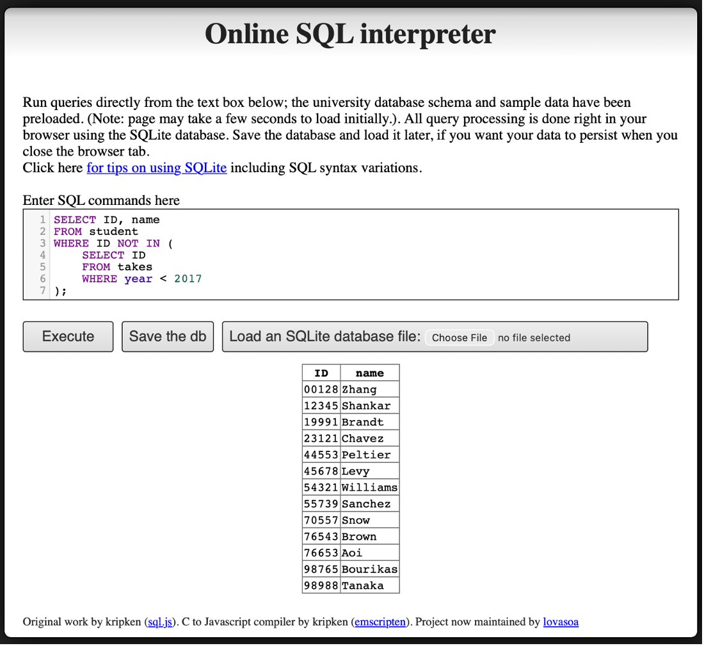
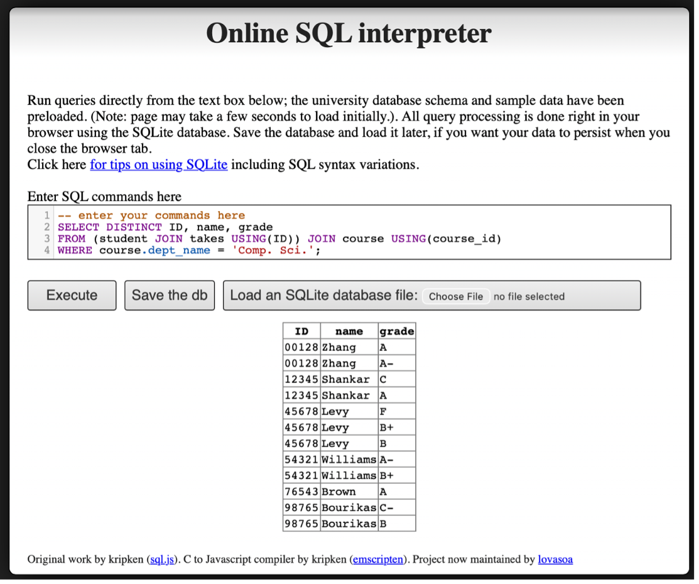
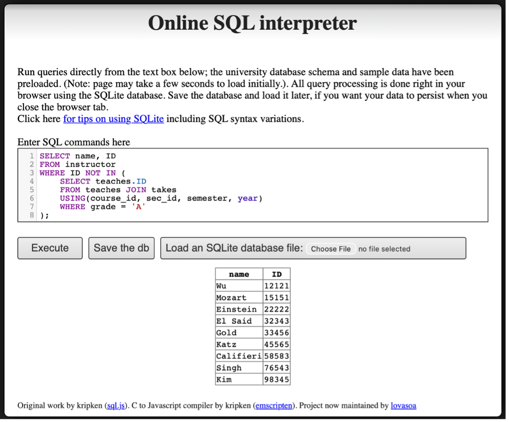
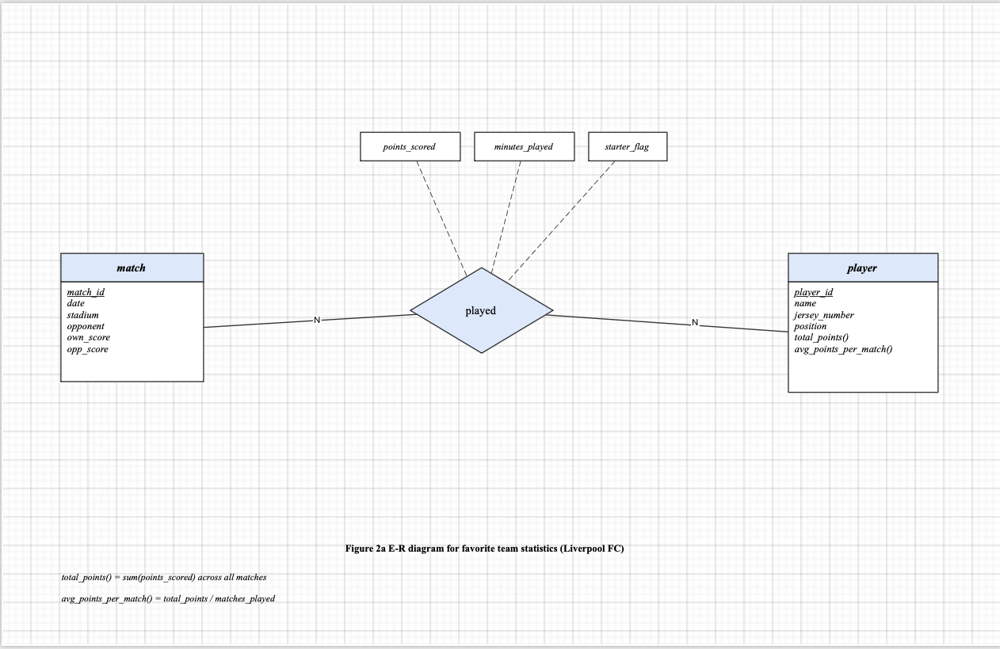
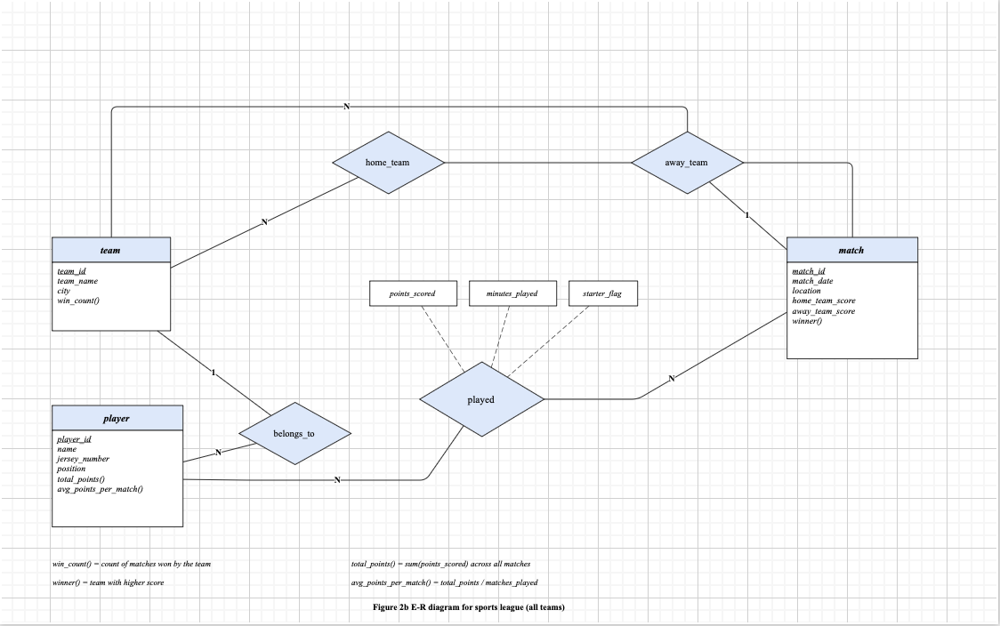
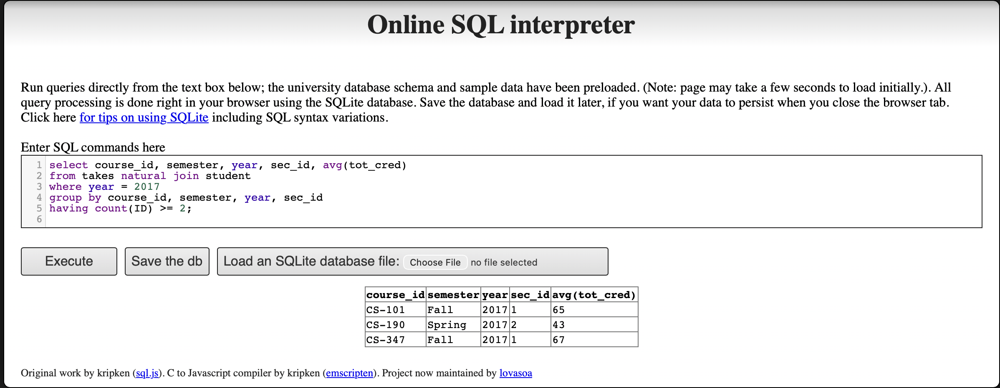
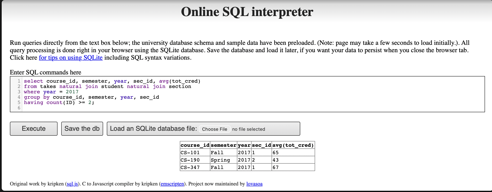
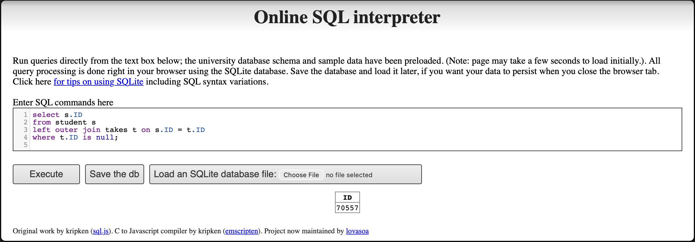

erDiagram
ClothingItem {
INT item_id PK
VARCHAR name
VARCHAR category
VARCHAR fabric
INT warmth_weight
INT breathability
JSON colors
JSON styles
INT formality_score
INT clean_score
VARCHAR status
}
Occasion {
INT occasion_id PK
VARCHAR name
INT formality_min
INT formality_max
JSON style_fit
}
CalendarEvent {
INT event_id PK
INT occasion_id FK
DATE event_date
TIME start_time
}
Weather {
INT weather_id PK
VARCHAR condition_name
DECIMAL temp_c
DECIMAL feels_like_c
INT humidity
DECIMAL wind_speed
DECIMAL precip_mm
}
Outfit {
INT outfit_id PK
INT occasion_id FK
INT weather_id FK
JSON items
INT color_score
INT fabric_score
INT style_score
INT total_score
TEXT explanation
}
ScoringRule {
INT rule_id PK
VARCHAR rule_type
VARCHAR description
JSON condition_json
INT score_delta
DATE valid_from
DATE valid_until
}
WearLog {
INT log_id PK
INT item_id FK
INT outfit_id FK
VARCHAR event_type
TIMESTAMP event_date
INT delta_clean
INT clean_score_after
}
Occasion ||--o{ CalendarEvent : "has"
Occasion ||--o{ Outfit : "generates"
Weather ||--o{ Outfit : "conditions"
Outfit ||--o{ WearLog : "records"
ClothingItem ||--o{ WearLog : "tracks"
ScoringRule }o--o{ Outfit : "evaluates"
Information Management
Assignments
Assignment 1
Question 1
Name and describe three applications you have used that employed a database system to store and access persistent data. (e.g. airlines, online trade, banking, university system)
For the first question, one example that comes to mind is video games. In video games, a player’s level and experience points, as well as the items and equipment they have obtained, are recorded, so the player can still access them the next time they log in. Another example is online shopping. For instance, Amazon records information such as the price of each product, the catalog it belongs to, whether it is eligible for free shipping, and whether it is in stock. A third example is a streaming platform, such as Netflix, which records a user’s region and subscription level. All of this data is stored persistently and can be accessed at a later time.
Question 2
Propose three applications in domain projects (e.g. criminology, economics, brain science, etc.) Be sure you include: i. Purpose ii. Functions iii. Simple interface design
Wardrobe Management Database
i. Purpose
The main purpose of this wardrobe management database is to minimize the time spent choosing outfits before going out.
For many people, the difficulty in daily outfit selection is not a lack of clothing, but the need to simultaneously consider colors, styles, occasions, and overall coordination, which leads to a high decision-making cost.
Therefore, I model the wardrobe as a relational database, which not only records individual clothing items but also describes the relationships between items, allowing outfit selection to be handled in a systematic way.
By structuring clothing data, this system aims to transform “rethinking what to wear every day” into “quickly selecting optimal combinations from a database.”
ii. Functions
In this system, each clothing item is treated as a data entity and described using a set of attributes, such as:
- category (T-shirts, jeans, outerwear, shoes),
- color (including the proportion of each color),
- style (clean-fit, formal, vintage, sports, etc.),
- material (denim, linen, cotton).
These attributes are normalized into multiple tables, and many-to-many relationships are used to represent that a single item can belong to multiple styles or be suitable for different occasions.
The core function of this database is not only to store items, but to describe the compatibility between items.
The system uses compatibility rules to define:
- Visual aesthetic constraints, such as avoiding more than three colors in a single outfit and limiting the number of style tags to maintain overall consistency
- Climate adaptability, where combinations are evaluated based on insulation-related variables to ensure balanced warmth between upper and lower body layers, and higher overall insulation is preferred as the temperature decreases
When a user selects a specific item (for example, a pink T-shirt), the system can immediately recommend other highly compatible items (such as light blue jeans and white sneakers) based on database relationships and rules, and rank these combinations by compatibility score to help the user make decisions more efficiently.
In addition, as data accumulates, the system can analyze the overall structure of the wardrobe, such as:
- Whether certain styles or clothing categories are lacking
- Whether colors or item types are overly concentrated
- Whether newly purchased items overlap in function with existing ones
- Which older items have not been used for a long time and could be considered for removal
This allows the wardrobe to function not just as an item list, but as a system that can be queried, analyzed, and optimized, and that can be extended to daily life applications such as outfit recommendations and purchase decision support.
This problem is particularly well suited for a relational database, because outfit selection inherently involves structured data and many-to-many relationships (such as items, styles, and compatibility rules), which can be efficiently combined and analyzed through relational queries.
iii. Simple interface design
When users enter the system, the home page displays a table view of all items in the wardrobe, including basic information such as category, color, style, material, and seasonality. The interface supports multi-select functionality.
Users can select one or more items they plan to wear and submit their selection to generate outfit results.
Based on the selected items and the compatibility rules stored in the database, the system generates multiple outfit candidates.
The outfit results page provides different sorting options, such as sorting by comfort score, aesthetic score, or climate fit score.
Each outfit displays its corresponding numerical scores, allowing users to quickly compare options and select the most suitable combination without repeatedly trying on clothes or overthinking the decision.
The interface supports fast decision-making: select items → generate outfits → sort by scores → pick the best match.
3D Printing Farm Order & Scheduling Database
i. Purpose
The purpose of this 3D printing farm database is to systematize the entire workflow—from customer order intake to automated estimation, machine scheduling, and progress tracking—so the farm can operate efficiently as order volume grows. The goals are to shorten turnaround time, reduce human scheduling errors, improve machine utilization, and maximize profitability.
In practice, 3D printing orders vary widely (model size, material, resolution, multi-color requirements, and post-processing such as painting). If pricing and scheduling rely on manual judgment, it is easy to underestimate time/cost, assign the wrong machine, or create bottlenecks in the order queue. Therefore, this system uses a relational database to store orders, machine capabilities, material usage, and scheduling states in a structured way, enabling fast and consistent decisions through rules and queries.
ii. Functions
Order intake & requirement tagging (Order Intake & Requirement Tagging)
When a customer submits an order, the system stores it as an order record with structured attributes, such as:
- Model size and volume (bounding box / volume)
- Printing type (FDM / SLA)
- Resolution settings (layer height / resolution)
- Multi-color requirement (multi-color)
- Material type (material type)
- Post-processing needs (post-processing, e.g., painting/sanding)
- Other customization requests (stored as tags)
These fields can be normalized into multiple tables, with many-to-many relationships used to represent that a single order can have multiple requirement tags.
Per-machine estimation (Per-Machine Estimation)
The key is not only to calculate an overall price for the order, but to estimate how the same order would perform on different machines, since time, cost, and completion time may vary by machine. This supports better machine assignment and scheduling decisions.
For each candidate machine, the system applies pricing rules or an estimation model to perform per-machine estimation, including:
- Estimated print time (estimated print time)
- Estimated material usage (estimated material usage)
- Machine-specific estimated cost & quote (machine-specific estimated cost & quote)
- Estimated completion time (estimated completion time, considering current workload)
The system stores these “order × machine” estimates for querying and ranking using different objective functions, such as lowest cost, earliest completion, or the most stable option within a deadline.
Order queue & status tracking (Order Queue & Status Tracking)
All orders are automatically added to an order queue (order list), and each order maintains a clear status, such as:
- pending
- queued
- printing
- post-processing
- completed
- failed
Managers can query:
- What is currently in the queue and its priority
- Which orders are printing vs. waiting for machines
- Which failed orders require reprinting or manual intervention
Machine capability modeling & assignment recommendations (Machine Capability & Assignment)
The database stores each machine’s capabilities and constraints, such as: - Machine type: multi-color / single-color / SLA / FDM - Maximum build volume (max build volume) - Supported materials (supported materials) - Speed/quality profile (speed/quality profile) - Current workload and availability (workload & availability)
When a new order arrives, the system first performs constraint filtering (e.g., size, material, multi-color requirements) to identify feasible machines, then uses per-machine estimation to generate recommended assignments, for example:
- Earliest completion time (earliest completion time)
- Lowest estimated cost (lowest estimated cost)
- Balanced option (deadline + stability)
This turns scheduling into a decision-support process rather than manual guesswork.
iii. Simple interface design
On the customer side, the system provides a customer order page where users can upload a 3D model or specify printing requirements such as size, material, resolution, multi-color options, and post-processing needs. Based on this information, the system automatically returns an estimated price and an estimated delivery time.
On the admin side, the system offers an order dashboard that displays the current order queue and order statuses. Administrators can sort or filter orders by deadline, priority, or processing status to manage workflow more efficiently.
The system also includes a machine dashboard that lists all available machines along with their machine type, maximum build volume, supported materials, current workload, and estimated availability. This allows operators to quickly understand machine capacity and constraints.
When an order is selected, the scheduling view presents a list of candidate machines that can fulfill the order. For each candidate machine, the system displays the estimated print time, estimated material usage, machine-specific cost and quote, and estimated completion time. The interface supports one-click sorting options, such as fastest, cheapest, or most stable, to assist administrators in making assignment decisions.
The interface supports efficient operations: submit order → per-machine estimation → queue order → recommend machines → schedule & track progress.
Wardrobe Management Database
i. Purpose
The purpose of this system is to manage the core information of a farm—such as fields, crop types, growth stages, and irrigation equipment—using a relational database.
At the same time, the system retrieves and stores weather data through APIs provided by weather forecast services, and combines this information with a set of irrigation rules to automatically generate a daily irrigation schedule.
The goal is to reduce manual decision-making costs while improving water-use efficiency and consistency in crop management.
ii. Functions
In this system, the database is not used only for data storage. Its core function is to integrate internal farm information with external weather data and automatically generate irrigation decisions based on predefined rules.
Core Data Management
The system uses a relational schema to manage the main entities of the farm, including:
- Field: field ID, location, area, and the crop currently planted
- Crop: crop type and its basic water requirements
- Growth Stage: stages such as germination, growth, flowering, and fruiting, each with different water needs
- Irrigation Equipment: equipment type (e.g., drip irrigation, sprinkler), flow rate or efficiency factor, and availability status
These entities are connected through relationships. For example, each field is associated with a specific crop and a current growth stage, and can be assigned available irrigation equipment.
Weather Data Integration
The system retrieves weather information through external weather forecast APIs, such as:
- Predicted rainfall amount
- Probability of precipitation
- Temperature range
This weather data is stored in the database and used as an important input for daily irrigation decisions, without requiring manual input from users.
Irrigation Rules and Schedule Generation
The system maintains a set of irrigation rules that describe irrigation requirements under different conditions, such as:
- Crop type × growth stage → recommended baseline irrigation amount
- If predicted rainfall exceeds a certain threshold → automatically reduce or cancel irrigation for the day
- Differences in irrigation equipment efficiency → adjust actual irrigation duration
When the daily scheduling process runs, the system combines:
- The crop type and growth stage of each field
- The weather forecast for the day
- The availability and efficiency of irrigation equipment
Based on this information, the system automatically generates a daily irrigation schedule, indicating whether each field requires irrigation and the recommended water amount or irrigation time.
iii. Simple interface design
When users enter the system, the home page displays a table view of all fields on the farm, including the current crop type, growth stage, and the system’s irrigation recommendation for the day.
Users can generate the daily irrigation schedule with a single action. Based on field information, weather forecasts, and irrigation rules, the system lists which fields require irrigation and provides recommended water amounts or irrigation durations.
The schedule is presented in a simple list format, allowing users to quickly review and execute irrigation tasks. After completion, users can mark irrigation status for record-keeping and future reference.
Question 5
What are the things current database system cannot do?
Current database systems are not capable of understanding the semantics behind data. As a result, in more complex applications, they often rely on manually defined rules or continuously adjusted weights to produce reasonable outputs. In addition, databases are limited in handling cross-context decision-making, where multiple competing objectives must be balanced simultaneously.
For example, in a wardrobe management database, the system can evaluate outfits based on structured criteria such as color combinations, style tags, material properties, and weather conditions. It can assign scores for factors like aesthetic quality, comfort, and climate suitability, and generate multiple candidate outfits that satisfy predefined rules. However, the database cannot determine which outfit represents the optimal balance among being visually appealing, comfortable, and suitable for the weather.
This limitation arises because preferences such as “looking good” or “feeling comfortable” are inherently subjective and context-dependent, and there is no single optimal solution that applies to all users or situations. Therefore, the role of the database is not to make the final decision, but to support decision-making by filtering infeasible options, structuring relevant information, and presenting comparable alternatives with transparent evaluation metrics.
Ultimately, the final choice must be made by the user, who can decide whether to prioritize comfort, aesthetics, or climate suitability in a given context. This highlights a fundamental limitation of current database systems: they are effective at decision support, but they cannot replace human judgment in complex, value-driven decisions.
Question 6
Describe at least three tables that might be used to store information in a social-network/social media system such as Twitter or Reddit.
A social-network or social media system such as Twitter or Reddit may be supported by at least the following three core tables:
1. User Table
The user table stores basic information about users, such as: - user_id - username - account creation time - profile metadata (e.g., bio or status)
This table represents the identities of users and serves as a reference for other tables in the system.
2. Post Table
The post table stores content created by users, such as:
- post_id
- author_id (foreign key referencing the User table)
- content
- timestamp
Each post is associated with a specific user, forming a one-to-many relationship between users and posts.
3. Comment Table
The comment table stores replies to posts (or other comments), such as:
- comment_id
- post_id (foreign key referencing the Post table)
- author_id
- content
- timestamp
This table supports threaded discussions and allows multiple users to participate in conversations under the same post.
These tables are separated to support relational queries, maintain data consistency, and enable efficient retrieval of users, posts, and discussion threads.
Assignment 2
Question 1
What are the differences between relation schema, relation, and instance? Give an example using the university database to illustrate.
Relation Schema = The logical structure of a relation: a list of attribute names and their domains. It does not change over time.
Example:instructor(ID, name, dept_name, salary)Relation = Informally used to refer to both the schema and instance together.
Example: “The department relation” can refer to either the schemadepartment(dept_name, building, budget)or the actual data it currently holds.Instance = A snapshot of the actual data in a relation at a given point in time. It changes as tuples are inserted, updated, or deleted.
Example: The department relation instance in Figure 2.5 contains 7 tuples. If the university adds a “Data Science” department, the instance grows to 8 tuples, but the schema remainsdepartment(dept_name, building, budget).
Question 2 & 3
Draw a schema diagram for the following bank database. Identify primary keys (underlined) and foreign keys.
The bank database consists of the following relations:
branch(branch_name, branch_city, assets)customer(ID, customer_name, customer_street, customer_city)loan(loan_number, branch_name, amount)borrower(ID, loan_number)account(account_number, branch_name, balance)depositor(ID, account_number)

Question 4
Describe two ways artificial intelligence or LLM can assist in managing or querying a database. In your answer, briefly explain how each method improves efficiency or accuracy compared to traditional (non-AI) approaches. (3–5 sentences)
Natural Language to SQL (Querying): LLMs can translate plain language questions directly into executable SQL queries, lowering the barrier for non-technical users and reducing syntax errors compared to writing SQL manually.
AI-Driven Database Tuning (Managing): LLMs can automatically analyze slow queries and recommend index optimizations, replacing the traditionally time-consuming process of a DBA manually examining query logs and execution plans.
Overall, both approaches reduce the need for specialized expertise and allow faster, more accurate database operations compared to traditional manual methods.
Assignment 3
Question 1
Open the Online SQL interpreter and load the university database.
Question 2
Write SQL codes to get a list of: i. Student IDs, ii. Instructors, iii. Departments

takes), Instructors, and DepartmentsQuestion 3
Write SQL codes to do the following queries:
i. Find the ID and name of each student who has taken at least one Comp. Sci. course; make sure there are no duplicate names in the result.

ii. Add grades to the list

iii. Find the ID and name of each student who has not taken any course offered before 2017.

iv. For each department, find the maximum salary of instructors in that department.

v. Find the lowest, across all departments, of the per-department maximum salary computed by the preceding query.

vi. Add names to the list

Question 4
Find instructor (with name and ID) who has never given an A grade in any course she or he has taught. (Instructors who have never taught a course trivially satisfy this condition.)

Assignment 4
Question 1
Explain the difference between a weak entity set and a strong entity set. Use an example other than the one in Chapter 6 to illustrate. (Consult Ch. 6, 6.5.3)
A strong entity set is an entity set that has a primary key of its own and can exist independently. For example, an Order entity with order_id as its primary key can uniquely identify each order without relying on any other entity.
A weak entity set is an entity set that does not have a sufficient set of attributes to form a primary key on its own. Instead, it depends on a related strong entity set (called the identifying entity set) for its identification. A weak entity set uses a discriminator (also called a partial key) that, when combined with the primary key of the identifying entity, uniquely identifies each entity in the weak set.
Example: Order and Order Item
Consider an e-commerce system:
Orderis a strong entity set with primary keyorder_id.Order_Itemis a weak entity set with discriminatoritem_number.
An Order_Item cannot be uniquely identified by item_number alone, because “item number 3” is meaningless without knowing which order it belongs to. The full identification requires: order_id (from the identifying entity Order) + item_number (the discriminator).
The relationship between Order and Order_Item is an identifying relationship, which means the existence of an Order_Item depends entirely on the existence of its associated Order.
E-R Diagram Notation:
- Weak entity set: drawn with a double-border rectangle
- Discriminator: marked with a dashed underline
- Identifying relationship: drawn with a double-border diamond
- The connection from the weak entity to the identifying relationship uses a double line (total participation), because every weak entity must be associated with an identifying entity
Question 2
Design an E-R diagram for keeping track of the scoring statistics of your favorite sports team. You should store the matches played, the scores in each match, the players in each match, and individual player scoring statistics for each match. Summary statistics should be modeled as derived attributes with an explanation as to how they are computed.
a) E-R diagram for a single team (Liverpool FC)
The diagram models two entities: match and player, connected by a many-to-many relationship played. The relationship attributes points_scored, minutes_played, and starter_flag record individual player statistics for each match. Derived attributes on player include total_points() and avg_points_per_match().

Derived attribute definitions:
total_points()= sum(points_scored) across all matchesavg_points_per_match()= total_points / matches_played
b) Expanded to all teams in the league
A team entity is added with attributes team_id, team_name, city, and derived attribute win_count(). Two new relationships connect team to match: home_team and away_team. A belongs_to relationship connects player to team (N:1). The match entity is updated with home_team_score, away_team_score, and derived attribute winner().

Additional derived attribute definitions:
win_count()= count of matches won by the teamwinner()= team with higher score
Question 3
3a
Consider the following query:
select course_id, semester, year, sec_id, avg (tot_cred)
from takes natural join student
where year = 2017
group by course_id, semester, year, sec_id
having count (ID) >= 2;i. Explain why appending natural join section in the from clause would not change the result.
The relation takes already contains the attributes (course_id, sec_id, semester, year), which together form the primary key of the section relation. Because of the foreign key constraint from takes to section, every tuple in takes is guaranteed to have a matching tuple in section.
Therefore, adding natural join section to the from clause is a lossless join:
- No rows are added, because each tuple in
takesmatches at most one tuple insection(since the join is on the primary key ofsection). - No rows are removed, because every tuple in
takeshas a corresponding tuple insection(due to the foreign key constraint).
The only effect of the additional join is that extra attributes from section (such as building, room_number, and time_slot_id) are appended to each tuple. However, since these attributes do not appear in the select, where, group by, or having clauses, they have no impact on the query result. The output remains identical.
ii. Test the results using the Online SQL interpreter.
Without natural join section:

With natural join section appended:

Both queries return identical results (CS-101, CS-190, CS-347), confirming that appending natural join section does not change the output.
3b
Write an SQL query using the university schema to find the ID of each student who has never taken a course at the university. Do this using no subqueries and no set operations (use an outer join). (Consult Ch. 4, 4.1.3)
select s.ID
from student s
left outer join takes t on s.ID = t.ID
where t.ID is null;The left outer join preserves every tuple from the student relation. For students who have no matching record in takes (i.e., they have never enrolled in any course), all attributes from takes are filled with null. The where t.ID is null condition filters the result to include only those students whose ID has no match in takes, meaning they have never taken any course.
This approach avoids subqueries and set operations by leveraging the property of outer joins: unmatched rows from the preserved (left) side produce null values on the non-preserved (right) side, which can then be detected with an is null test.

Assignment 5
Question 1
An E-R diagram can be viewed as a graph. What do the following mean in terms of the structure of an enterprise schema?
a) The graph is disconnected
In graph theory, a disconnected graph means the graph has at least two connected components — that is, there exist nodes with no path between them. In the context of an enterprise E-R schema, this means the diagram contains at least two groups of entity sets and relationship sets that are completely independent of each other, sharing no relationships, no foreign key references, and no common attributes. In practice, this implies the schema is modeling two or more entirely separate business domains with no interaction between them.
b) The graph has a cycle
In graph theory, a cycle means there exist two nodes in the graph that are connected by two or more completely distinct paths. In the context of an enterprise E-R schema, this means there are multiple relationship paths connecting the same set of entity sets.
However, a cycle does not necessarily imply redundancy. Each path in the cycle may carry semantically independent information — for example, one path may capture relationship attributes along the x-dimension and another along the y-dimension, and neither can be derived from the other. Whether the cycle represents true redundancy depends entirely on the semantic constraints of the domain: a relationship is truly redundant only if its information can be fully derived from the other paths in the cycle. Therefore, a cycle signals complex interdependencies in the schema that require careful analysis, but not automatic redundancy.
Question 3
We can convert any weak entity set to a strong entity set by simply adding appropriate attributes. Why, then, do we have weak entity sets?
Although it is technically possible to convert any weak entity set to a strong entity set by adding a unique identifier attribute (e.g., a surrogate key), weak entity sets are still useful and preferred for the following reasons:
Semantic Clarity and Modeling Fidelity. Weak entity sets reflect genuine real-world dependencies. For example, a room within a building only has meaning relative to the building it belongs to. Converting it into a strong entity set by assigning a globally unique
room_idwould technically work, but would obscure this inherent dependency and make the schema harder to understand.Avoiding Meaningless Surrogate Keys. Creating unique keys for entities that have no independent identity — such as order items within an order, or a patient’s log entries within a hospital — forces the introduction of artificial keys that carry no real-world meaning. This adds complexity without improving the quality of the data model.
Enforcing Referential Integrity and Existence Dependency. Weak entity sets make existence dependencies explicit in the schema. Because a weak entity set can only exist if its identifying (owner) entity exists, this constraint is built into the model. If the owner entity is deleted, its dependent weak entities are automatically considered invalid. This enforces data integrity at the conceptual level in a way that a strong entity set with a foreign key constraint does not as clearly communicate.
Reducing Redundancy. If a weak entity’s natural identifier is only unique within the context of its owner (e.g., section number within a course), using a composite identifier (owner key + discriminator) is more compact and meaningful than introducing an entirely new global key. It avoids duplicating the owner’s key information unnecessarily.
In summary, weak entity sets improve the expressiveness and clarity of the E-R model. They allow designers to accurately represent entities whose existence and identity are inherently tied to another entity, leading to schemas that are easier to understand, maintain, and reason about.
Question 4
4a
Consider the employee database:
employee (ID, person_name, street, city)
works (ID, company_name, salary)
company (company_name, city)
manages (ID, manager_id)where the primary keys are underlined. Give an expression in SQL for each of the following queries.
i. Find ID and name of each employee who lives in the same city as the location of the company for which the employee works.
SELECT e.ID, e.person_name
FROM employee AS e, works AS w, company AS c
WHERE e.ID = w.ID
AND w.company_name = c.company_name
AND e.city = c.city;This query joins employee with works to link each employee to their company, then joins with company to get the company’s city. The WHERE clause then filters for employees whose city matches the city of their employer.
ii. Find ID and name of each employee who lives in the same city and on the same street as does her or his manager.
SELECT e.ID, e.person_name
FROM employee AS e, manages AS m, employee AS mgr
WHERE e.ID = m.ID
AND m.manager_id = mgr.ID
AND e.city = mgr.city
AND e.street = mgr.street;This query uses the manages table to identify each employee’s manager, then joins employee twice — once for the employee (aliased as e) and once for the manager (aliased as mgr). The WHERE clause requires both the city and the street to match between the employee and their manager.
iii. Find ID and name of each employee who earns more than the average salary of all employees of her or his company.
SELECT e.ID, e.person_name
FROM employee AS e, works AS w
WHERE e.ID = w.ID
AND w.salary > (
SELECT AVG(w2.salary)
FROM works AS w2
WHERE w2.company_name = w.company_name
);This query uses a correlated subquery to compute, for each employee, the average salary of all employees at their company. The outer query then filters for employees whose salary exceeds this per-company average. The correlation is established by matching w2.company_name = w.company_name.
4b
Consider the following SQL query that seeks to find a list of titles of all courses taught in Spring 2017 along with the name of the instructor.
SELECT name, title
FROM instructor NATURAL JOIN teaches
NATURAL JOIN section NATURAL JOIN course
WHERE semester = 'Spring' AND year = 2017What is wrong with this query?
The problem lies in how NATURAL JOIN works: it joins on all columns that share the same name across the joined relations. In the standard university schema, the relations have the following attributes:
instructor(ID,name,dept_name,salary)teaches(ID,course_id,sec_id,semester,year)section(course_id,sec_id,semester,year,building,room_number,time_slot_id)course(course_id,title,dept_name,credits)
When the query performs instructor NATURAL JOIN teaches, it correctly joins on ID. When it then joins with section, it correctly joins on course_id, sec_id, semester, year. However, when it finally joins with course, both the running result (from instructor) and course contain the attribute dept_name. The NATURAL JOIN therefore additionally enforces the condition instructor.dept_name = course.dept_name, which incorrectly restricts the results to only include cases where the instructor belongs to the same department as the course.
This is incorrect because instructors can — and often do — teach courses offered by departments other than their own. Those cross-department teaching assignments would be wrongly excluded from the query results.
The fix is to replace only the last NATURAL JOIN course with an explicit JOIN course USING (course_id). This ensures that the join with course is performed only on course_id, preventing dept_name from being silently included as a join condition:
SELECT name, title
FROM instructor NATURAL JOIN teaches
NATURAL JOIN section
JOIN course USING (course_id)
WHERE semester = 'Spring' AND year = 2017;This version controls exactly which attribute is joined on, preventing dept_name from unintentionally filtering out cross-department teaching assignments.
Assignment 6
Question 1 — Websites Using JSON and XML
Look up websites containing the following data representations: a) Using JSON, b) Using XML. Analyze the websites in terms of structure and composition. Name the technology/methods use for creating the web database.
a) JSON Example — GitHub API User Data
URL: https://api.github.com/users/octocat
This page shows public GitHub user data in JSON format. The data is returned as a JSON object with many key-value pairs such as login, id, html_url, followers, and created_at.

Structure and composition:
- The outer structure is a JSON object marked by
{ }. - Each field is stored as a key-value pair, for example
"login": "octocat". - The response contains strings, numbers, URLs, boolean values, and null values.
- This format is lightweight and easy for websites and apps to exchange data.
Possible technologies / methods:
- REST API
- Backend web service
- Database support such as PostgreSQL, MySQL, or NoSQL systems
- JSON response for web and application data exchange
b) XML Example — Apple Sitemap
URL: https://www.apple.com/sitemap.xml
This page shows Apple’s sitemap in XML format. It lists webpage links so that search engines can discover and index the site.

Structure and composition:
- The root element is
<urlset>. - Each webpage entry is stored inside a repeated
<url>element. - The actual page address is stored inside the
<loc>tag. - The data is organized in a hierarchical tag structure, which is a key feature of XML.
Possible technologies / methods:
- XML sitemap standard
- Website content publishing system or CMS
- Backend-generated data from a site database
- Search engine indexing support
Quick Comparison
- JSON is shorter and easier for web APIs and applications.
- XML uses tags and hierarchy, so it is useful for structured documents and sitemaps.
- Both formats help websites store or exchange data in an organized way.
Question 2 — SQL Exercises
i. Students Without Advisors (Left Outer Join)
Express the following query in SQL using no subqueries and no set operations. (Hint: left outer join)
select ID
from student
except
select s_id
from advisor
where i_ID is not nullIdea: Keep all rows from student by using LEFT OUTER JOIN. Match student.ID with advisor.s_id. If a student has no matching advisor row, then advisor columns become NULL. Therefore, where a.s_id is null returns students without advisors.
SQL answer:
select s.ID
from student s
left outer join advisor a
on s.ID = a.s_id
where a.s_id is null;
ii. Instructors Who Teach Every Course in Their Department
Using the university schema, write an SQL query to find the names and IDs of those instructors who teach every course taught in his or her department (i.e., every course that appears in the course relation with the instructor’s department name). Order result by name.
Idea: For each instructor, first limit the scope to courses in the same department. Then check whether there exists any department course that the instructor did not teach. If no such course exists, then the instructor taught every course in the department. This is why the query uses NOT EXISTS with another NOT EXISTS inside it.
SQL answer:
select i.name, i.ID
from instructor i
where not exists (
select *
from course c
where c.dept_name = i.dept_name
and not exists (
select *
from teaches t
where t.ID = i.ID
and t.course_id = c.course_id
)
)
order by i.name;
Question 3 — R and PostgreSQL
a) Import the Full Database
The university database was created using the DDL (Data Definition Language) schema and populated with the large relations insert file from the textbook website.
DDL schema (DDL.sql):
create table classroom
(building varchar(15),
room_number varchar(7),
capacity numeric(4,0),
primary key (building, room_number)
);
create table department
(dept_name varchar(20),
building varchar(15),
budget numeric(12,2) check (budget > 0),
primary key (dept_name)
);
create table course
(course_id varchar(8),
title varchar(50),
dept_name varchar(20),
credits numeric(2,0) check (credits > 0),
primary key (course_id),
foreign key (dept_name) references department (dept_name)
on delete set null
);
create table instructor
(ID varchar(5),
name varchar(20) not null,
dept_name varchar(20),
salary numeric(8,2) check (salary > 29000),
primary key (ID),
foreign key (dept_name) references department (dept_name)
on delete set null
);
create table section
(course_id varchar(8),
sec_id varchar(8),
semester varchar(6)
check (semester in ('Fall', 'Winter', 'Spring', 'Summer')),
year numeric(4,0) check (year > 1701 and year < 2100),
building varchar(15),
room_number varchar(7),
time_slot_id varchar(4),
primary key (course_id, sec_id, semester, year),
foreign key (course_id) references course (course_id)
on delete cascade,
foreign key (building, room_number) references classroom
on delete set null
);
create table teaches
(ID varchar(5),
course_id varchar(8),
sec_id varchar(8),
semester varchar(6),
year numeric(4,0),
primary key (ID, course_id, sec_id, semester, year),
foreign key (course_id, sec_id, semester, year)
references section on delete cascade,
foreign key (ID) references instructor (ID)
on delete cascade
);
create table student
(ID varchar(5),
name varchar(20) not null,
dept_name varchar(20),
tot_cred numeric(3,0) check (tot_cred >= 0),
primary key (ID),
foreign key (dept_name) references department (dept_name)
on delete set null
);
create table takes
(ID varchar(5),
course_id varchar(8),
sec_id varchar(8),
semester varchar(6),
year numeric(4,0),
grade varchar(2),
primary key (ID, course_id, sec_id, semester, year),
foreign key (course_id, sec_id, semester, year)
references section on delete cascade,
foreign key (ID) references student (ID)
on delete cascade
);
create table advisor
(s_ID varchar(5),
i_ID varchar(5),
primary key (s_ID),
foreign key (i_ID) references instructor (ID)
on delete set null,
foreign key (s_ID) references student (ID)
on delete cascade
);
create table time_slot
(time_slot_id varchar(4),
day varchar(1),
start_hr numeric(2) check (start_hr >= 0 and start_hr < 24),
start_min numeric(2) check (start_min >= 0 and start_min < 60),
end_hr numeric(2) check (end_hr >= 0 and end_hr < 24),
end_min numeric(2) check (end_min >= 0 and end_min < 60),
primary key (time_slot_id, day, start_hr, start_min)
);
create table prereq
(course_id varchar(8),
prereq_id varchar(8),
primary key (course_id, prereq_id),
foreign key (course_id) references course (course_id)
on delete cascade,
foreign key (prereq_id) references course (course_id)
);b) Run RPostgres01.R
The R script connects to the local PostgreSQL database using RPostgres and DBI, runs three queries, exports a CSV, and disconnects.
Load libraries and connect:

Query (a) — Fetch all instructors:

Query (b) — Comp. Sci. instructors with salary > 60000:

Query (c) — Students with tot_cred >= 50:

Export to CSV and disconnect:

c) Results
R script (RPostgres01.R):
# Connect PostgreSQL database using R
# Packages: DBI, odbc, RPostgres
# Documentation:
## DBI: https://dbi.r-dbi.org
## RPostgres https://github.com/r-dbi/RPostgres
## R https://solutions.posit.co/connections/db/
## odbc: https://solutions.posit.co/connections/db/best-practices/drivers/
install.packages(c("RPostgres", "DBI", "odbc"))
## Load libraries
library(RPostgres)
library(DBI)
library(odbc)
## Connect to PostgreSQL and database
con <- dbConnect(
RPostgres::Postgres(),
dbname = "university",
host = "localhost",
port = 5432,
user = "postgres",
password = "123489"
)
## Perform queries
# (a) Simple query: fetch all rows/columns in 'instructor'
instructor_data <- dbGetQuery(con, "SELECT * FROM instructor")
head(instructor_data)
# (b) Fetch instructors in 'Comp. Sci.' department with salary > 60000
comp_sci_instructors <- dbGetQuery(
con,
"SELECT * FROM instructor
WHERE dept_name = 'Comp. Sci.' AND salary > 60000;"
)
comp_sci_instructors
# (c) Query 'student' table: students with tot_cred >= 50
student_data <- dbGetQuery(con, "SELECT * FROM student WHERE tot_cred >= 50")
head(student_data)
## Export to CSV
write.csv(instructor_data, file = "instructor_export.csv", row.names = FALSE)
## Clean up
dbDisconnect(con)Assignment 7 — AI Exercise (Shiny)
Two Shiny apps were built, modified according to the assignment requirements, and deployed live to shinyapps.io. App 1 was re-engineered from a local PostgreSQL connection to a bundled SQLite database so that it runs fully in the cloud without requiring the instructor’s machine to host a server.
App 1 — University Database (SQLite + ggplot2)
Modifications applied:
- (a) Password / connection. The original
RPostgresconnection tolocalhost:5432was replaced with a file-based SQLite connection:dbConnect(RSQLite::SQLite(), "university.db"). Theuniversity.dbfile was built from the textbook’sDDL.sqlandlargeRelationsInsertFile.sqland bundled with the app. - (b) Sort salary high → low. Changed
reorder(dept_name, y_value)toreorder(dept_name, -y_value)so the tallest bar sits on the left. - (c) Another variable from another table. Added a
selectInputdropdown that switches between two queries: average instructor salary (tableinstructor) and average student total credits (tablestudent).
App 2 — Old Faithful Geyser Histogram
Modification applied:
- (a) Barchart color. Changed
col = "blue"to the project’s global palette — fill#18A3A380(teal,color1), border#FF4D8DCC(pink,color2) — for consistency with App 1.
Assignment 8 — NBA Database Shiny App
Following the workshop at datageneration/informationmanagement — workshop/Shiny, the full pipeline was reproduced end-to-end and deployed live to shinyapps.io.
a) Build the NBA database on local PostgreSQL
The course-provided NBAPlayers.sql file was loaded into a fresh PostgreSQL 18 database named NBAplayers:
createdb -U postgres NBAplayers
psql -U postgres -d NBAplayers -f NBAPlayers.sqlThree tables were populated: player (4,501 rows), player_salary (1,292 rows), and player_photos (4,593 rows).
b) Export into SQLite
Because the SQL file’s CREATE TABLE syntax is already SQLite-friendly, the same file was loaded directly into a SQLite database file nba.db — no manual schema translation was needed:
sqlite3 nba.db < NBAPlayers.sqlRow counts in nba.db exactly match the PostgreSQL build (4,501 / 1,292 / 4,593), confirming a clean export.
c) Embed in Shiny
The app follows the instructor-provided template structure: a single slider that controls how many active players to render in a DT DataTable, with each row’s headshot embedded as an <img> tag.
The query inner-joins Player with Player_Photos on idPlayer and filters to is_active = 1:
SELECT p.id, p.first_name, p.last_name, p.full_name,
pp.urlPlayerHeadshot
FROM Player p
INNER JOIN Player_Photos pp ON pp.idPlayer = p.id
WHERE p.is_active = 1
LIMIT <slider_value>;The headshot column is rendered with escape = FALSE so the URLs become inline images:
table_df$headshot <- paste0(
'<img src="', table_df$urlPlayerHeadshot, '"></img>'
)The same color palette as Assignment 7 (#18A3A380 header, #FF4D8DCC border) is applied via custom CSS so the look matches the rest of the site.
d) Deploy on Shinyapps.io
rsconnect::deployApp(
appDir = "nba-shiny",
appName = "epps6354-hw8-nba",
appFiles = c("app.R", "nba.db")
)The nba.db SQLite file is bundled with the app, so the deployed instance is fully self-contained — no remote database connection needed.
Live app: https://chentzuyuan.shinyapps.io/epps6354-hw8-nba/
Final Project
Weather- and Occasion-Aware Wardrobe Database with Rule-Based Outfit Recommendation
Project Overview
A single-user wardrobe management system. Each morning, the system reads the user’s calendar (to determine the occasion) and the current weather, filters out unwearable items (dirty or archived), and ranks candidate outfits using a rule-based scoring engine built on color theory, fabric compatibility, and style coherence. The output is the best recommended outfit plus 3–5 ranked alternatives, each with a score and explanation.
Core workflow: Wake up → Read calendar (occasion) + weather → Filter wearable items → Score outfit combinations → Output recommendation
Three scoring dimensions:
- Color — 60/30/10 color theory; each item carries a
primary / secondary / accentcolor role - Fabric — same-fabric bonus, mixed-fabric reasonableness, warmth adequacy relative to weather
- Style — style-tag consistency across items, and style–occasion fit scores
Database Tables (Simplified — 7 Tables)
The original design used 21 normalized tables. To reduce complexity while preserving all core functionality, the schema was consolidated into 7 tables by: (1) removing the User table (single-user system), (2) absorbing lookup tables (Category, Color, Fabric, StyleTag) into JSON columns on ClothingItem, (3) merging detail tables into their parent tables, and (4) unifying wear tracking and laundry into a single event log.
Entity-Relationship Diagram
1. ClothingItem
| Column | Type | Description |
|---|---|---|
item_id |
INT PK | Unique identifier |
name |
VARCHAR(50) | Item name (e.g. “Navy Oxford Shirt”) |
category |
VARCHAR(20) | Category: top, bottom, shoes, outerwear, accessory |
fabric |
VARCHAR(20) | Fabric type (e.g. cotton, denim, linen, polyester) |
warmth_weight |
INT | Warmth rating (0–100) |
breathability |
INT | Breathability rating (0–100) |
colors |
JSON | Color roles: [{"name":"navy","role":"primary"},{"name":"white","role":"accent"}] |
styles |
JSON | Style tags: ["clean fit","formal"] |
formality_score |
INT | Formality level (0–100) |
clean_score |
INT | Cleanliness (100 = fresh, 0 = needs wash); item is recommendable only when > 0 |
status |
VARCHAR(10) | active or archived; only active items enter recommendation |
Absorbs the former: User, Category, Color, Fabric, StyleTag, ItemStyle, ItemColor.
2. Occasion
| Column | Type | Description |
|---|---|---|
occasion_id |
INT PK | Unique identifier |
name |
VARCHAR(30) | Occasion name (e.g. “job interview”, “casual outing”, “gym”) |
formality_min |
INT | Minimum acceptable formality (0–100) |
formality_max |
INT | Maximum acceptable formality (0–100) |
style_fit |
JSON | Style-to-fit-score mapping: {"formal":95,"clean fit":80,"street":20} |
Absorbs the former: Occasion, StyleOccasionFit. The style_fit JSON replaces the separate many-to-many table.
3. CalendarEvent
| Column | Type | Description |
|---|---|---|
event_id |
INT PK | Unique identifier |
occasion_id |
INT FK → Occasion | Links to the occasion type |
event_date |
DATE | Date of the event |
start_time |
TIME | Start time; used to determine morning vs. evening outfit needs |
Drives automatic occasion detection: the system reads today’s events to determine the occasion context.
4. Weather
| Column | Type | Description |
|---|---|---|
weather_id |
INT PK | Unique identifier |
condition_name |
VARCHAR(20) | Named condition (e.g. “cold_rainy”, “hot_humid”, “mild_clear”) |
temp_c |
DECIMAL(4,1) | Temperature in Celsius |
feels_like_c |
DECIMAL(4,1) | Feels-like temperature |
humidity |
INT | Humidity percentage (0–100) |
wind_speed |
DECIMAL(4,1) | Wind speed in km/h |
precip_mm |
DECIMAL(5,1) | Precipitation in mm |
Merges the former: WeatherSnapshot, WeatherCondition. The condition_name column replaces the separate condition lookup table.
5. Outfit
| Column | Type | Description |
|---|---|---|
outfit_id |
INT PK | Unique identifier |
occasion_id |
INT FK → Occasion | The occasion this outfit was generated for |
weather_id |
INT FK → Weather | The weather snapshot at generation time |
items |
JSON | Ordered item list: [{"item_id":3,"slot":"top","layer":1},{"item_id":7,"slot":"bottom","layer":1}] |
color_score |
INT | Color harmony sub-score (60/30/10 rule) |
fabric_score |
INT | Fabric compatibility sub-score |
style_score |
INT | Style consistency sub-score |
total_score |
INT | Weighted total of the three sub-scores |
explanation |
TEXT | Human-readable scoring breakdown |
Merges the former: Outfit, OutfitItem. The items JSON replaces the separate detail table, supporting multi-layer dressing via the layer field.
6. ScoringRule
| Column | Type | Description |
|---|---|---|
rule_id |
INT PK | Unique identifier |
rule_type |
VARCHAR(20) | outfit_score (scoring bonus/penalty) or wear_degrade (clean score deduction) |
description |
VARCHAR(100) | Human-readable rule description (e.g. “Same-fabric bonus +5”) |
condition_json |
JSON | Condition to match: {"category":"top","occasion":"gym"} |
score_delta |
INT | Points to add/subtract when condition is met |
valid_from |
DATE | Rule effective start (nullable; supports trend-based rules) |
valid_until |
DATE | Rule expiry date (nullable) |
Merges the former: OutfitScoringRule, WearDegradeRule. The rule_type column distinguishes between outfit scoring rules and wear degradation rules.
7. WearLog
| Column | Type | Description |
|---|---|---|
log_id |
INT PK | Unique identifier |
item_id |
INT FK → ClothingItem | The clothing item involved |
outfit_id |
INT FK → Outfit | Associated outfit (nullable; null for laundry events) |
event_type |
VARCHAR(10) | wear or laundry |
event_date |
TIMESTAMP | When the event occurred |
delta_clean |
INT | Clean score change (negative for wear, positive for laundry reset to 100) |
clean_score_after |
INT | Resulting clean score after this event |
Merges the former: WearEvent, WearEventItem, LaundryBatch, LaundryBatchItem. Each row records one item’s wear or laundry event. Laundry resets clean_score to 100.